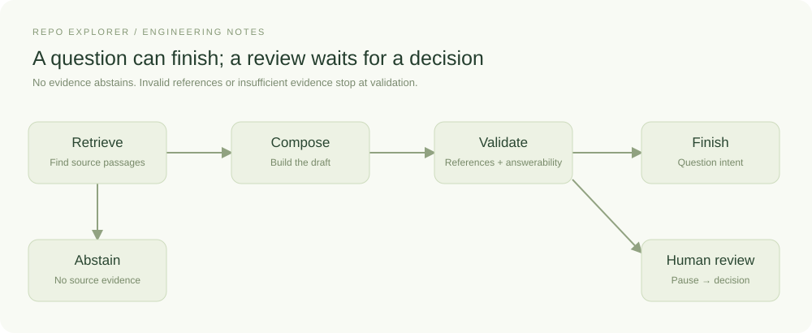
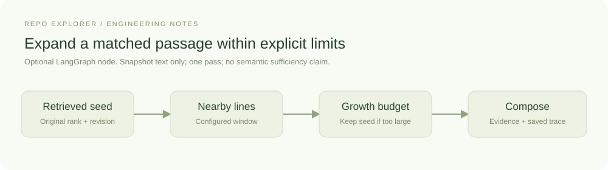
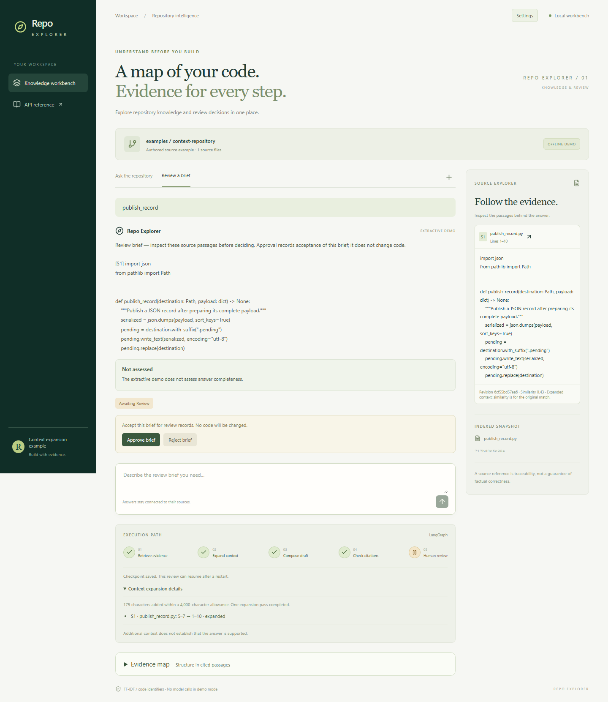
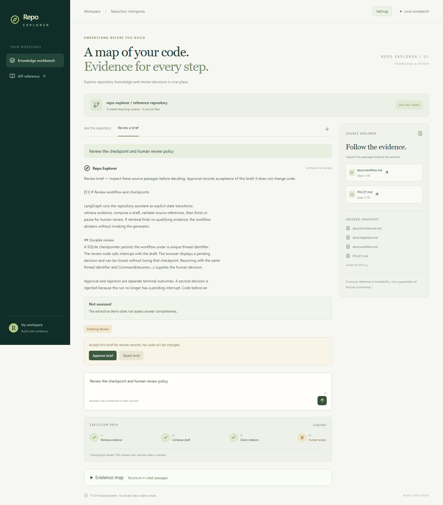

A review that survives closing the browser
A review can last longer than an HTTP request. The person reading a draft might close the browser, restart the application, or return tomorrow. A callback held in memory cannot represent that lifecycle reliably. Repo Explorer uses a LangGraph interrupt and a durable checkpoint to make the pending decision part of application state.
Represent the workflow as state and steps
Orchestration is the code that decides what runs next and carries information between steps. In LangGraph, a state is the data available to the workflow, a node is a function that reads it and returns updates, and an edge connects one step to the next. A conditional edge selects a path using the current state. Those concepts are described in LangGraph's graph API guide.
In Repo Explorer, retrieval adds source passages to the state. A conditional edge checks whether any were found. It sends an empty result to abstention and sends usable context toward generation. The rules are ordinary application code, so we can inspect why a run took a particular path.

The default graph path is retrieve, compose, and validate. No evidence routes directly to abstention. Invalid source references and model-reported insufficient evidence stop the draft at validation. Complete or partial answers with valid references finish for question intent, while review intent reaches an interrupt. The extractive demo remains unassessed and follows the same review path. The diagram omits helper functions and transport details so the actual decisions remain readable.
In backend/src/repo_explorer/workflow.py, RunState stores the question, intent, evidence,
answer, citation identifiers, answerability, limitations, and completed steps.
Node functions return updates.
build_workflow connects them with StateGraph and compiles the graph using the
application’s SQLite checkpointer.
Add context for a concrete retrieval failure
A matched passage can end just before the operation a reader needs to inspect.
In an authored example, retrieval finds publish_record at lines 5–7 while the
write and replacement operations are at lines 9–10. Merely reporting the function
name would leave the explanation without its supporting code.
Repo Explorer offers an optional expand_context node between retrieval and
composition. The earlier diagram shows the default with expansion disabled;
this focused diagram shows what the extra step does:

The conditional edge enters this node only when sources exist and an expansion adapter is configured. A node need not call a model: LangGraph's graph API represents state updates and branching for deterministic operations too. Here the node adds snapshot context, records its decisions, and then passes the evidence to the existing generator. There is one pass and no loop.
Choose Settings → Evidence context → line_window. The default strategy is
still none. Users control surrounding lines and a shared added-character budget.
The expander uses text captured during indexing, verifies the original excerpt,
and preserves source identity. A candidate that does not fit the remaining budget
leaves the original passage intact. It never cuts a candidate midway through a
line merely to fit it.

The authored source example runs in offline demo mode. The source now includes the previously missing write/replace operations. The expanded trace records the original and resulting ranges; similarity still refers to the original match.
The public example is reproducible with evaluations/context.json and its
companion configuration. Its matched excerpt grows from 184 to 359 characters.
This spends additional context to recover nearby evidence. Because the context
sizes differ and the example was authored during development, the comparison
establishes only what that added window supplied. The API exposes the same trace
through context_expansion, so another frontend can explain the decision.
Increasing the original chunk size is another reasonable approach. In the private development case, larger chunks also recovered the missing write sequence and found a serialization rule that the fixed window missed. Expansion used less context for the write question. These mixed results justify exposing configuration and recording tradeoffs; they do not establish one universal chunking strategy.
The node applies the configured window whenever retrieval returns passages. The expansion can still stop inside a function, and it stays within the retrieved files. It also expands this function for an unanswerable question about its production region. More source text cannot supply information absent from the repository. Question-driven investigation and semantic sufficiency checks remain separate work.
Pause with data
The review node sends the draft to the caller:
decision = interrupt({"kind": "review_brief", "answer": state["answer"]})
The node resumes when the application invokes the graph with a decision:
graph.invoke(
Command(resume={"approved": True}),
{"configurable": {"thread_id": run_id}},
)
The identifier connects the request to the saved state. LangGraph's interrupt documentation explains this pause/resume contract and notes that the interrupted node starts again on resume. Repo Explorer therefore performs no external writes before its interrupt. A future node that creates a ticket or starts a worker would need an explicit idempotency strategy.
Follow the review in the browser
Select Review a brief and ask about the checkpoint and human-review policy. The answer appears with an awaiting review status. The trace shows completed retrieval, composition, and citation checks, followed by the paused review stage.

The controls operate on a persisted interrupt. Approval records acceptance of the review brief. This workflow has no code-execution step.
Reload the page. Its URL contains the run identifier, and the browser fetches the saved run from the API. Restarting the same application version also preserves the pending review because the state is in SQLite. Approve or reject the brief to reach a terminal status. The service refuses a second decision on a completed run.
When expansion was enabled, the enlarged excerpts and their trace are already part of that checkpoint. Resuming review preserves them even if settings or the source checkout changed afterward; it does not run context expansion again. Approval also preserves the answer's qualifications: approving a partial brief does not turn it into a complete answer. The model's assessment describes its claimed coverage, while the review status records the person's decision.
Know the persistence boundary
Persistence stores the state required to continue. Repo Explorer supports the local restart case with a single backend process and serialized mutations. Checkpoint migration across graph-schema changes, user authorization, and distributed execution would need additional implementation. Source support also needs its own review, regardless of whether the answer was saved successfully.
The API response includes the recorded node names. The frontend turns them into a compact trace after the request completes. A running request currently waits for its API response before those steps become visible in the browser.
See service.py for run identity and decision handling, and workflow.py for the
transitions. LangGraph's persistence overview
provides the underlying checkpoint model.